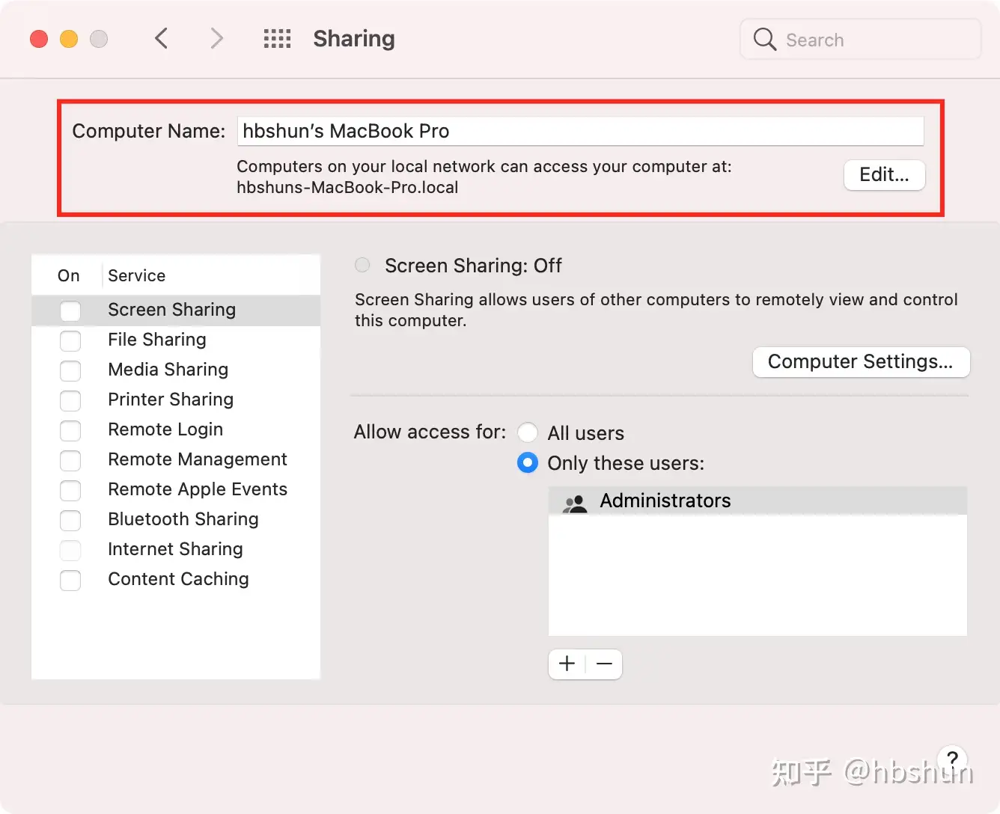
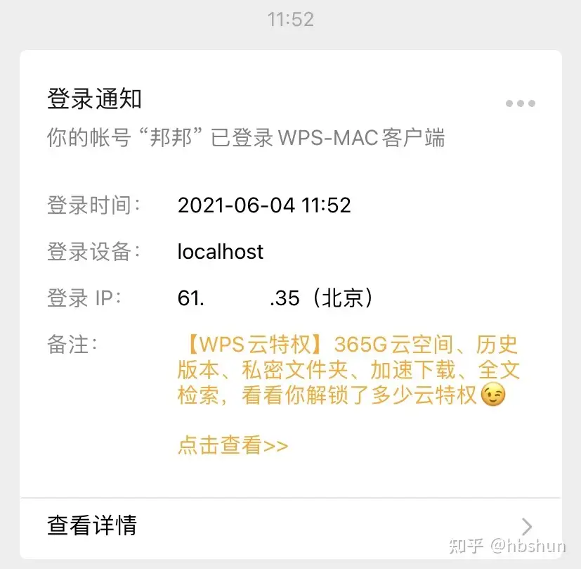

macOS设置电脑名称
2021年4月6日 星期二
mac电脑有三个名字：ComputerName，HostName，LocalHostName
ComputerName电脑名称
在苹果生态中是：设置->共享->电脑名称，想修改的话在这里直接改。
在自己iCloud的设备管理
隔空投送中别人看到的设备名称

LocalHostName本地主机名
本地主机名是已.local 结尾的名字，它是给Bonjour 服务用来标记设备的，在修改电脑名称的时候会同步修改，你也点击编辑按钮，单独设置本地主机名。参考链接：在 Mac 上更改电脑的名称或本地主机名
HostName
而系统还有另外一个名字，apple文档中没有介绍。默认的名字是localhost；
在终端uname -n得到的是localhost
在局域网中共享的名字
类似这种第三方app获取到的名字

要修改这个名字需要用命令，当然上面两个名字也可以用这个命令修改。下面三条命令分别设置三个名称：
# 修改电脑名称
sudo scutil --set ComputerName xxx
# 修改本地主机名
sudo scutil --set LocalHostName xxx
# 修改主机名HostName
sudo scutil --set HostName xxx